MY EDUCATION!
PRIMARY SCHOOL
I started my schooling at Kampong Tasek National Primary School which is located in Gong Chokoh Pasir Puteh Village, Kelantan. Initially I attended Sungai Petai National Primary School but moved to Tasek Kampong National School in 2015 because my father was a teacher at that school.
SECONDARY SCHOOL
In 2017 I attended Sungai Petai National Secondary School from form 1 to form 5. The distance to school takes 25 minutes to reach. This school opened in 2012 and is a new secondary school in the village area. The number of students in the school there are not many because there is another secondary school in the area which is Sekolah Menengah Kebangsaan Agama Dato' Ismail.
FORM SIX
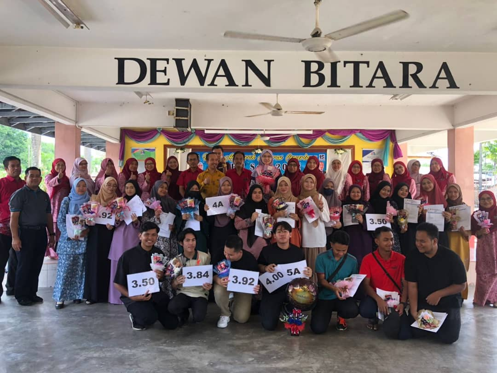 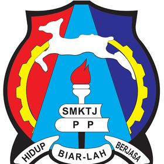 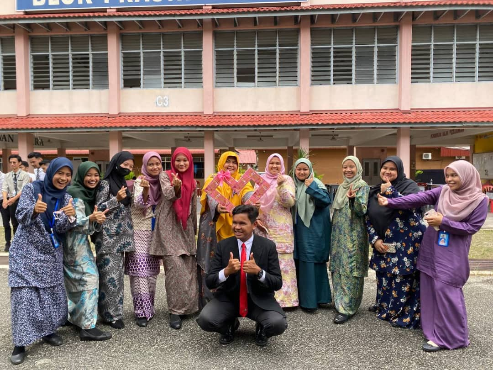 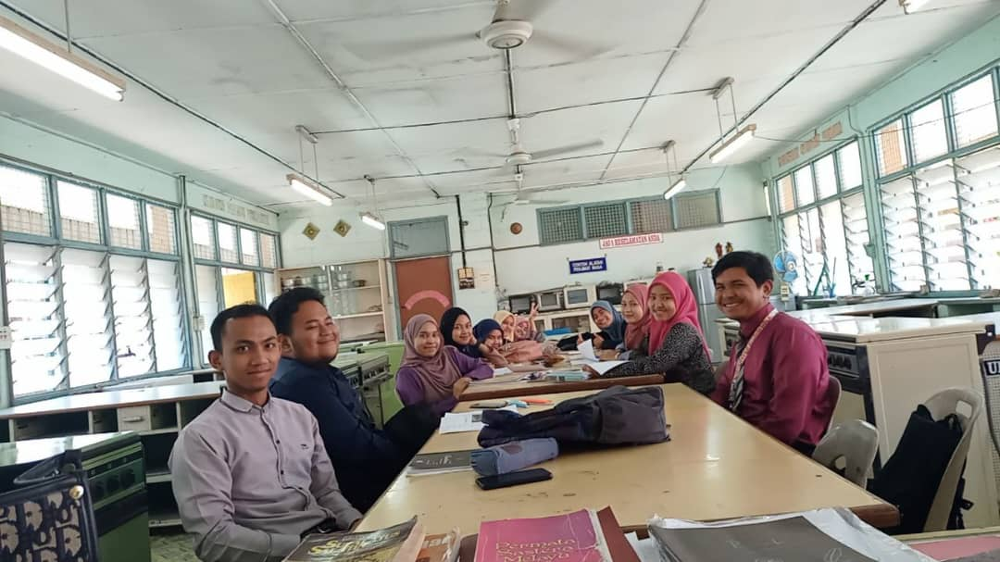
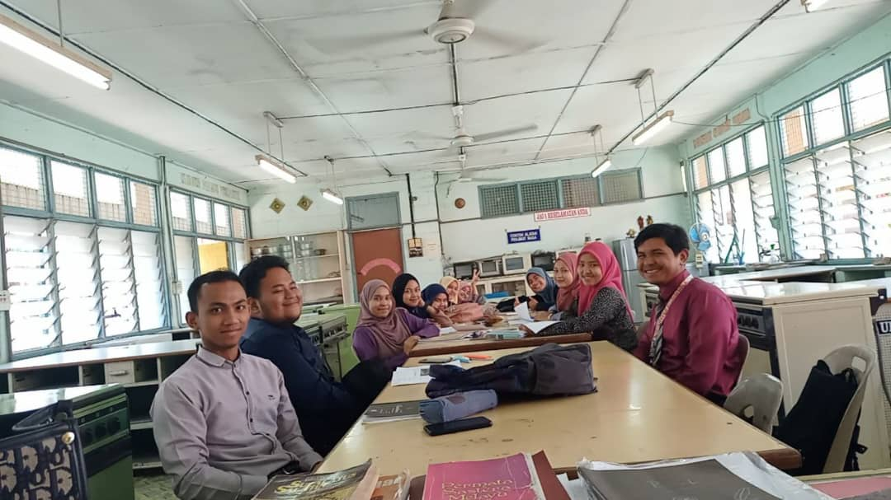
after finishing form 5 I continued my studies to form 6 at Tok janggut national secondary school which is located opposite Tengku Anis hospital, Pasir Puteh Kelantan. In form 6 I took the literary stream which has 5 subjects namely general studies, Malay language, history, geography and communicative Malay literature. My form six class teacher is teacher Roosniha binti Abdul Aziz
UNIVERSITY LIFE
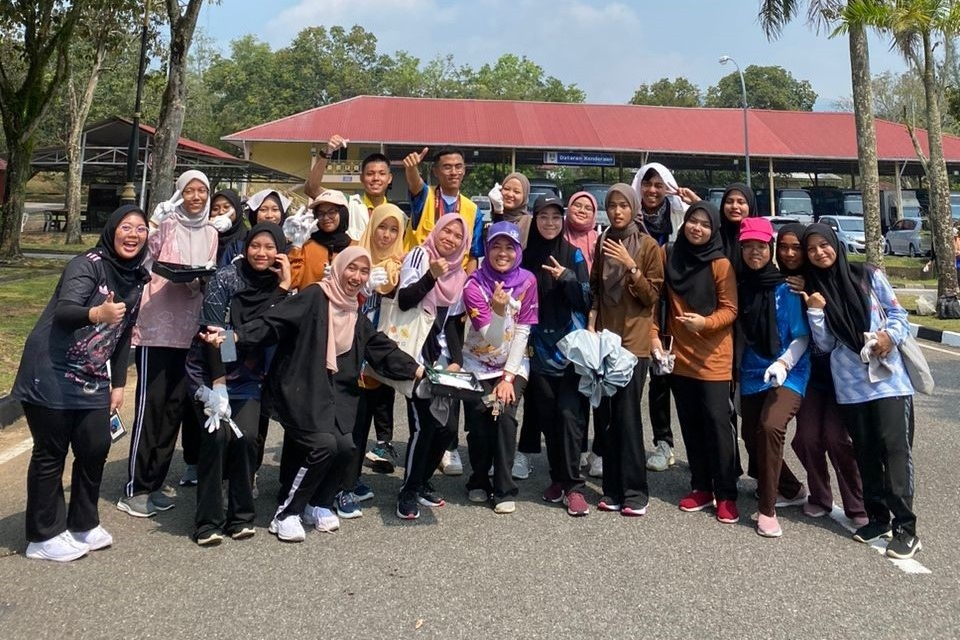 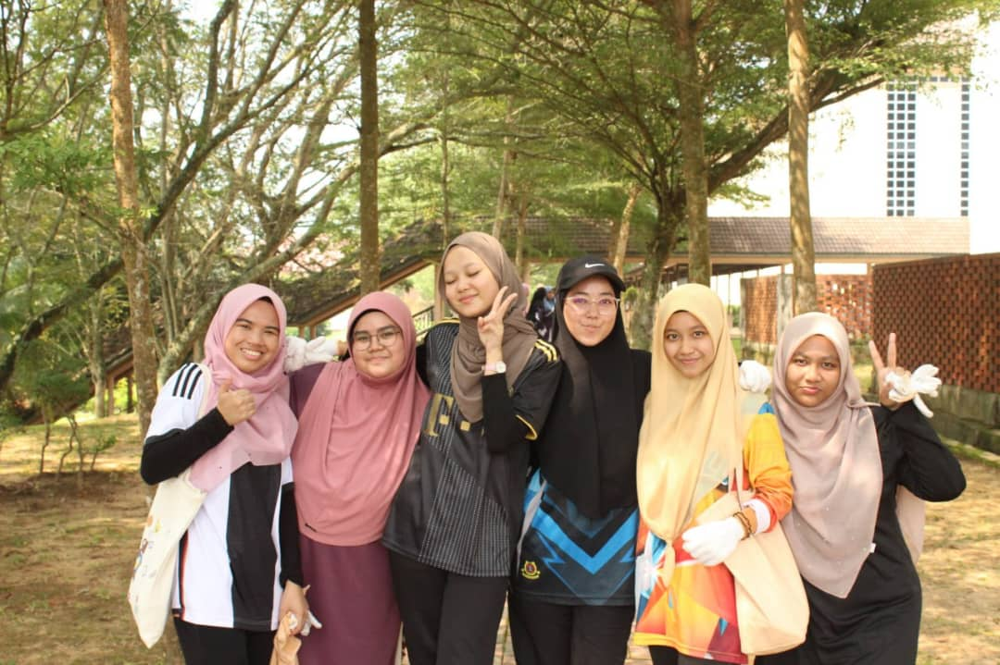 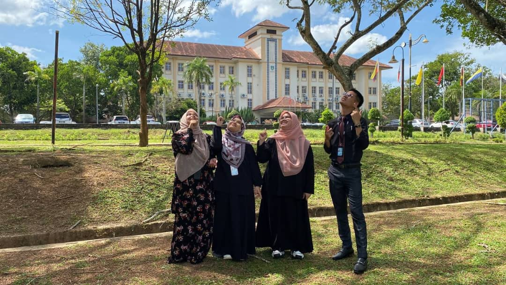 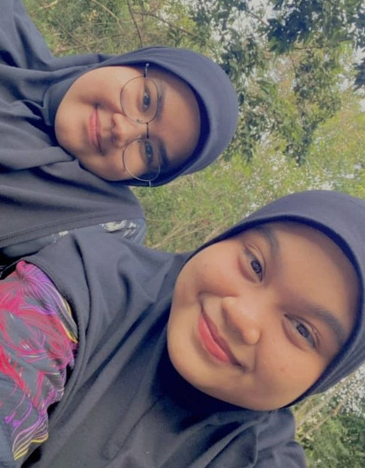 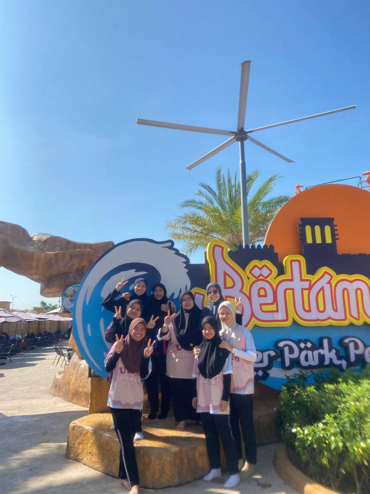 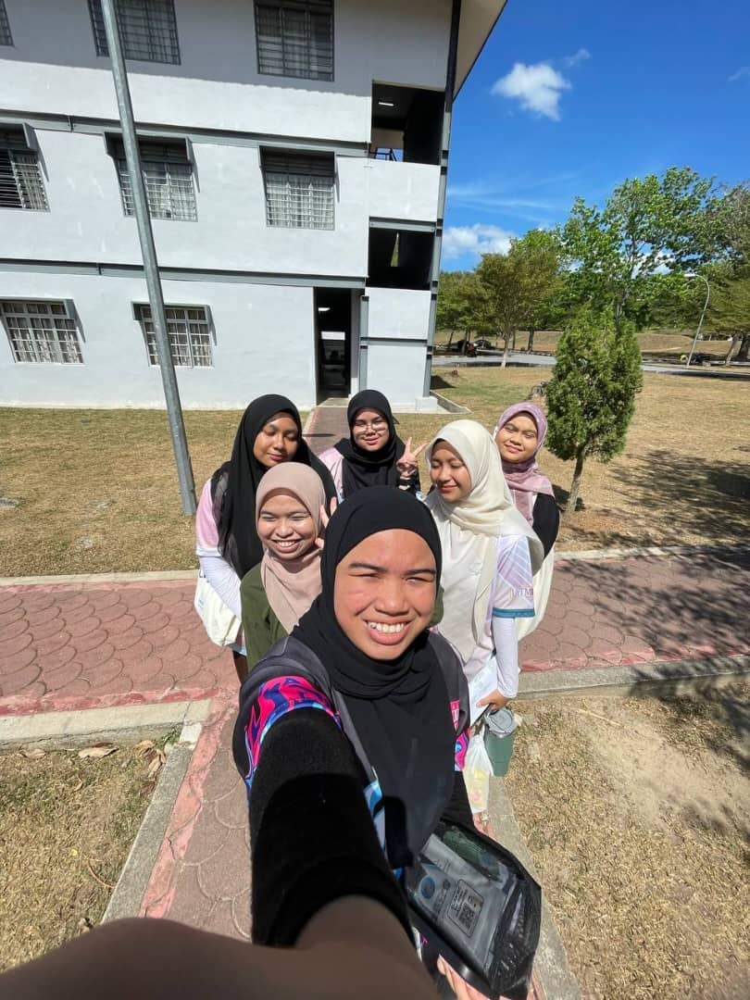After finishing form 6 in April 2023, I got an offer to continue my studies at MARA technology university, Kedah branch. I am a bachelor's student in the field of library management.